이전 · 길게 이어지는 카드와 설명
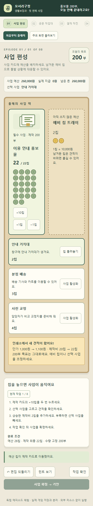
프레임 안을 스크롤하면 이전 화면 전체를 볼 수 있어요. 이 캡처는 기존 둘러보기의 배정 완료 상태입니다.
붙임 시안에서 읽은 방향은 짧은 목표, 크게 보이는 조작판, 사물로 표현한 조작 대상, 가까이 보이는 결과였어요. 두 화면을 이 기준으로 다시 만들었습니다.
▶ 예산부터 직접 플레이✎ 공문부터 체험디자인 해설 ↗26칩의 흐름을 한눈에 보고, 제작 카드에 돈을 놓고, 지원 카드를 고릅니다. 견적이 오르면 같은 판에서 회수하고 옮깁니다.

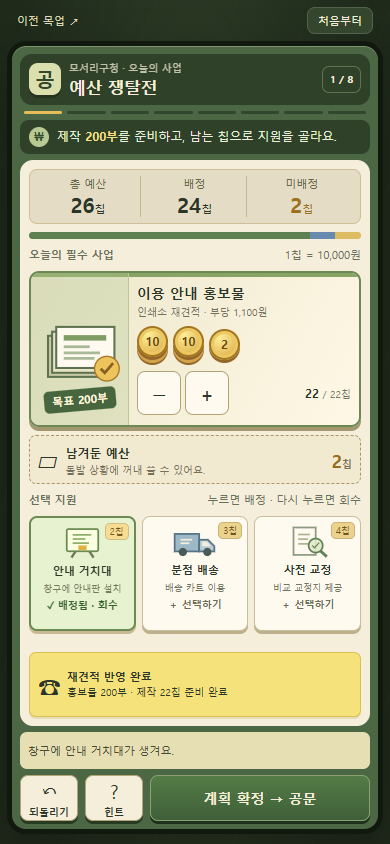
공문이 주 작업판입니다. 바꿀 칸을 누르면 관련 자료가 펼쳐지고, 잘못 가져온 내용은 해당 칸에서 다시 고칩니다.
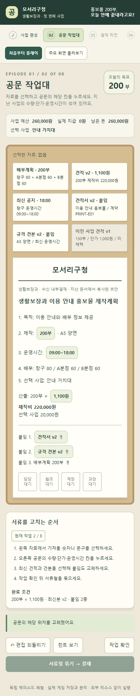
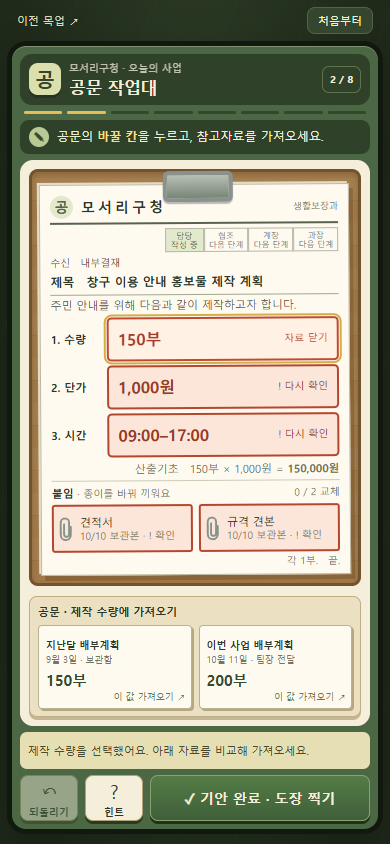
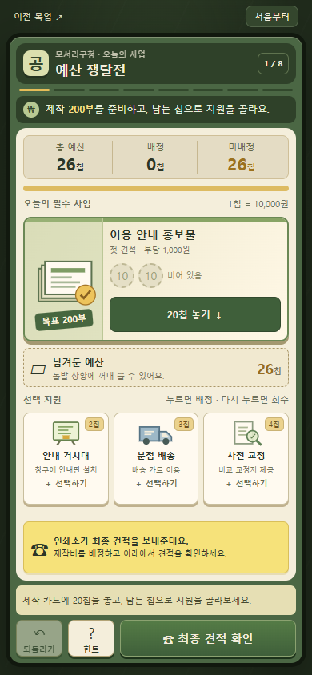
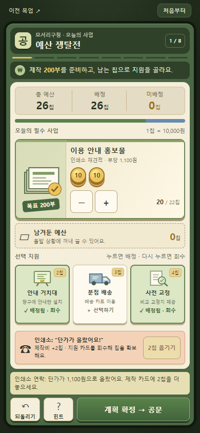
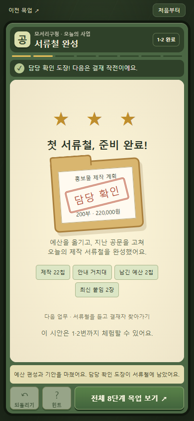
아래는 첨부된 네 HTML의 첫 게임 프레임입니다. 화면 구성을 참고했으며, 게임 엔진과 판정 로직은 가져오지 않았어요.
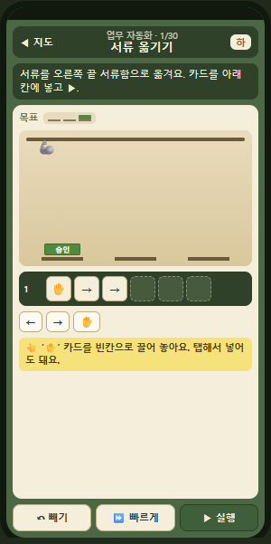
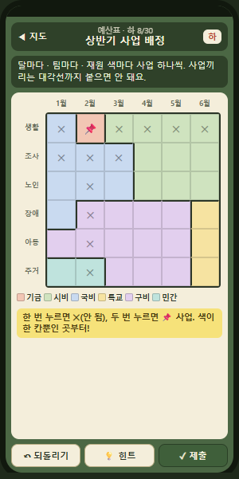
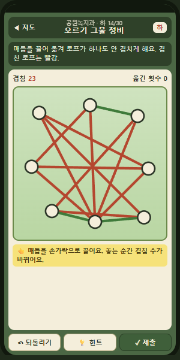
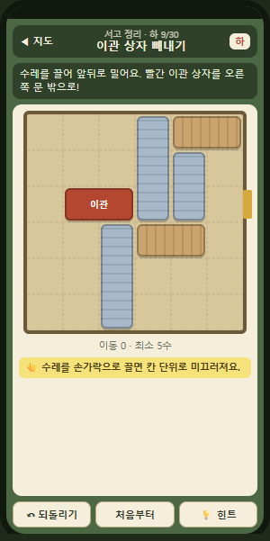
확인: 예산 배정과 회수, 칩 부족 복구, 자료 선택과 수정, 되돌리기, 기안 완료, 모바일·데스크톱 버튼 표시.
390×844에서는 두 작업판과 자료 선택창이 한 화면에 들어갑니다. 320×740에서는 작업판 내부를 스크롤하며 하단 실행 버튼은 유지됩니다.
이번 시안은 1·2번까지입니다. 이용자가 재미를 느끼는지는 실제 플레이 관찰로 확인해야 합니다.